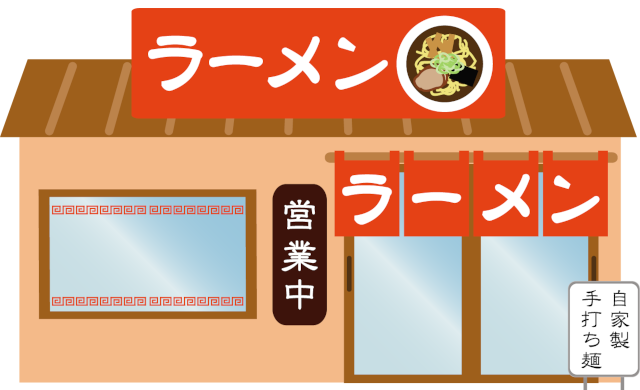

店舗情報
FUJINラーメン 東京駅店

| 住所 |
〒000-0000 東京都××区××1丁目2-3 |
|---|---|
| 電話番号 | 000-000-0000 |
| お支払い方法 |
【クレジット】VISA、Mastercard 【電子マネー】ID、Suica、PASMO、ICOCA |
| 営業時間 |
（平日・土日祝）11:00～23:00(ﾗｽﾄｵｰﾀﾞｰ 22:30) ※定休日 12月31日～1月3日 |
| 席数 | カウンター6席 / テーブル2席 / 座敷2席 |
| 交通手段 | 東京駅○○出口より徒歩3分 |
| 店舗概要 | 令和4年2月オープン |
| 備考 |
※政府や自治体の要請により、酒類の提供および営業時間が変更になる場合がございます。ご了承ください。 ※満席時に店舗でお待ちになる際は、お車でお待ちになる等、極力密を避けるようご協力お願いします。 |
スタッフより
【感染拡大防止に対する取り組み】
・座席の間隔を通常よりも広く設けております。
・店内・スタッフ共にアルコール消毒を徹底しております。
（お客様にもご協力をお願い致します）
・従業員のマスク着用を徹底しております。
・ご来店の際にはマスクをご着用のうえ「マスク飲食」にご協力ください。
【テイクアウトやってます！】
ラーメン、サイドメニューお持ち帰り可能です。
詳しくはスタッフまでお問い合わせください。
FUJIN自慢の味を、おうちやオフィスでもお楽しみください！！
・座席の間隔を通常よりも広く設けております。
・店内・スタッフ共にアルコール消毒を徹底しております。
（お客様にもご協力をお願い致します）
・従業員のマスク着用を徹底しております。
・ご来店の際にはマスクをご着用のうえ「マスク飲食」にご協力ください。
【テイクアウトやってます！】
ラーメン、サイドメニューお持ち帰り可能です。
詳しくはスタッフまでお問い合わせください。
FUJIN自慢の味を、おうちやオフィスでもお楽しみください！！